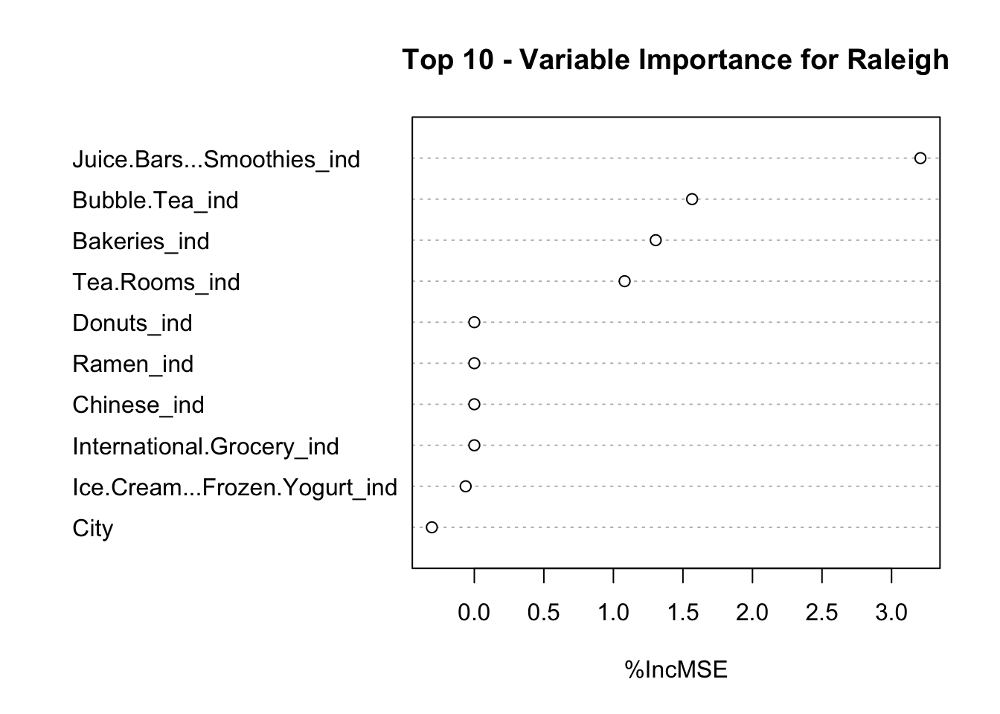
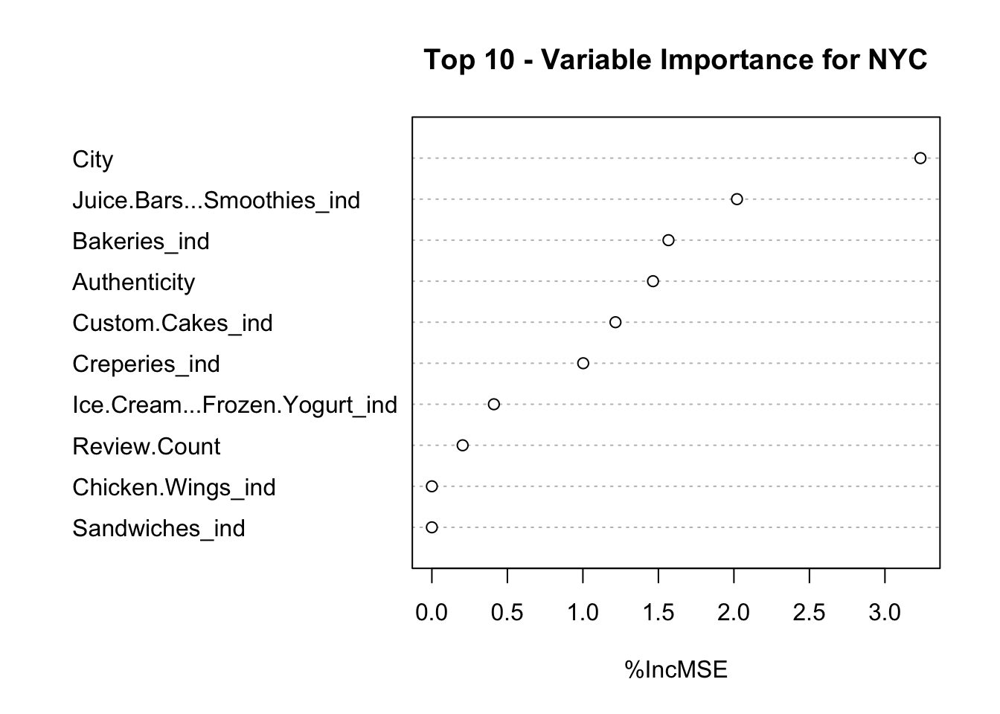

3 Methodology and Results
3.1 Statistical Tests
Prior to conducting any statistical tests, we checked the assumptions for normality, equal variance, and independence. Since we had a relatively small data set, we used the Shapiro-Wilk test to assess whether the shops are normally distributed and Levene’s test for equality of variances (F-test) between shops in Raleigh and NYC. While the normality assumption did not hold (p= 3.81 x 10-4), we were able to confirm the equality of variances (p= 0.81). For the independence assumption, we assumed each shop was independent; however, we created a feature called “chain” that provided a binary flag if a shop had multiple locations.
Thus, we performed Welch’s 2 sample t-test on the two different groups. We found that boba shops in Raleigh were significantly different from boba shops in NYC, with a p-value of 4e-03. All statistical tests utilized a significance level (alpha) of 0.05. The mean rating of shops in Raleigh was 4.16 (variance 0.32), while the mean rating in NYC was 3.84 (variance 0.35). This resulted in a difference in means of 0.35, as seen in Figure 1 in the previous section.
With our intial hypothesis confirmed by the statistically significant difference, our focus shifted to a more detailed comparison of boba shops in Raleigh and NYC. We decided to approach the problem with both an explanatory and predictive approach, running both a linear regression model for explainability and a predictive random forest model to find predictors of boba shop ratings.
3.2 Linear Regression Model
To utilize an explanatory approach, we built two different variable selection models with rating as the target variable using forward stepwise regression. One model was for Raleigh while the other model was for New York City. After setting a full model and an empty model separately for the Raleigh and NYC datasets, we ran stepwise selection with k, the number of model parameters, set to 2 for both locations. The following code chunks display the stepwise selection code.
3.2.1 Raleigh Variable Selection
##
## Call:
## lm(formula = Rating ~ Juice.Bars...Smoothies_ind + Asian.Fusion_ind +
## Coffee...Tea_ind + Bakeries_ind + Tea.Rooms_ind, data = raleigh_df)
##
## Residuals:
## Min 1Q Median 3Q Max
## -1.03755 -0.27358 0.06431 0.22642 0.72642
##
## Coefficients:
## Estimate Std. Error t value Pr(>|t|)
## (Intercept) 4.27358 0.09213 46.385 < 2e-16 ***
## Juice.Bars...Smoothies_ind1 -0.73603 0.16208 -4.541 5.76e-05 ***
## Asian.Fusion_ind1 -0.97265 0.31419 -3.096 0.00373 **
## Coffee...Tea_ind1 0.39814 0.14467 2.752 0.00912 **
## Bakeries_ind1 -0.52265 0.31419 -1.663 0.10467
## Tea.Rooms_ind1 0.47642 0.31483 1.513 0.13871
## ---
## Signif. codes: 0 '***' 0.001 '**' 0.01 '*' 0.05 '.' 0.1 ' ' 1
##
## Residual standard error: 0.4257 on 37 degrees of freedom
## Multiple R-squared: 0.4623, Adjusted R-squared: 0.3896
## F-statistic: 6.361 on 5 and 37 DF, p-value: 0.00023493.2.2 NYC Variable Selection
##
## Call:
## lm(formula = Rating ~ Authenticity + City + Creperies_ind + Taiwanese_ind +
## Juice.Bars...Smoothies_ind, data = nyc_df)
##
## Residuals:
## Min 1Q Median 3Q Max
## -1.02837 -0.24584 0.00181 0.27797 1.47163
##
## Coefficients:
## Estimate Std. Error t value Pr(>|t|)
## (Intercept) 5.1026 0.4282 11.917 < 2e-16 ***
## Authenticity1 -0.4408 0.1286 -3.427 0.00114 **
## CityElmhurst -1.0037 0.4709 -2.131 0.03738 *
## CityFlushing -1.1334 0.4276 -2.651 0.01038 *
## CityForest Hills -0.9790 0.5428 -1.804 0.07659 .
## CityFresh Meadows -0.4075 0.4518 -0.902 0.37089
## CityJackson Heights -0.1618 0.6574 -0.246 0.80647
## CityNew York 0.1178 0.5510 0.214 0.83149
## CityQueens -0.7002 0.4608 -1.520 0.13411
## CityRego Park -1.1618 0.6574 -1.767 0.08255 .
## Creperies_ind1 -1.3989 0.4500 -3.109 0.00293 **
## Taiwanese_ind1 0.4680 0.2265 2.066 0.04338 *
## Juice.Bars...Smoothies_ind1 -0.3063 0.1493 -2.052 0.04480 *
## ---
## Signif. codes: 0 '***' 0.001 '**' 0.01 '*' 0.05 '.' 0.1 ' ' 1
##
## Residual standard error: 0.4939 on 57 degrees of freedom
## Multiple R-squared: 0.4173, Adjusted R-squared: 0.2946
## F-statistic: 3.401 on 12 and 57 DF, p-value: 0.000866The best linear regression for Raleigh had an AIC of -67.90 and five features of the juice bar/smoothie indicator, Asian fusion indicator, coffee/tea indicator, bakeries indicator, and tea room indicator. The best linear regression for NYC had an AIC of 19.72 and found the features of custom cakes indicator, authenticity, and chain. Among the two sites, there were eight distinct features observed in the complete variable selection models of all the variables in explaining the rating. None of these explanatory variables after selection were mutually shared.
3.3 Random Forest Model
While random forest models are generally used for prediction, we used their ability to assess variable importance as a comparison point for the linear regression model. This ranking of variables was determined by the percent increase in the mean squared error (MSE). We assessed the variable importance of our predictive model output with a variable called “random”, seen in the plot of variable importance for Raleigh and NYC below.
The Raleigh plot of variable importance is displayed below: 
The top important variables for the predictive model in Raleigh were similar to the linear regression model. Of the five explanatory variables of the linear regression (juice bar/smoothie indicator, Asian fusion indicator, coffee/tea indicator, bakeries indicator, and tea room indicator), four appeared before the random variable. A high overlap between explanatory and predictor variables allows us to infer that there are similar variables that go into forming and retaining a good Raleigh boba shop. These include:
Having a variety of options, such as smoothies and juices.
Appealing to the “fusion” audience rather than as an authentic boba shop.
Location.
Having food options, such as baked goods.
Being tagged as a tea room.
The NYC plot of variable importance is displayed below: 
The top importance variables output from the random forest for New York City seemed to focus on location and authenticity, seen in the “longitude”, “city”, and “authenticity” variables. The custom cakes indicator also appeared before our random variable.
It’s important to note that the “city” variable was important in both the Raleigh and NYC variable importance outputs from our random forests; this may indicate that the shop’s location is a large factor in a Yelp rating. This output inspired us to visualize our data set and see the map of boba shops for both data sets.
3.4 Visualization
We utilized the visualization platform Tableau to display both Raleigh and NYC boba shops by longitude and latitude. The feature “city” in the data set indicated that Raleigh’s n = 44 boba shops spanned 9 towns, while NYC’s n = 70 boba shops spanned 10 neighborhoods. We noticed that shops in NYC tended to be more concentrated or in closer proximity to each other than shops in Raleigh. This indicates that there was more competition in close proximity in NYC than in Raleigh. This visualization reiterated the results from both the variable selection model and the predictive random forest model. The variable selection model displayed the most significant explanatory variables, indicating a gap in features between locations.
The random forest model confirmed that the “city” feature was important in mean boba shop rating outcomes, which could be attributed in part to physical shop proximity, as seen on the Tableau dashboard.